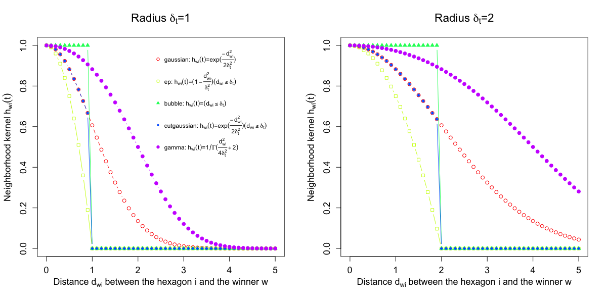

visKernels is supposed to visualize a series of
neighborhood kernels, each of which is a non-increasing
functions of: i) the distance d_{wi} between the
hexagon/rectangle i and the winner w, and ii)
the radius \delta_t at time t.
visKernels(newpage = T)
invisible
There are five kernels that are currently supported:
h_{wi}(t)=e^{-d_{wi}^2/(2*\delta_t^2)} h_{wi}(t)=e^{-d_{wi}^2/(2*\delta_t^2)}*(d_{wi} \le
\delta_t) h_{wi}(t)=(d_{wi} \le \delta_t) h_{wi}(t)=(1-d_{wi}^2/\delta_t^2)*(d_{wi}
\le \delta_t) h_{wi}(t)=1/\Gamma(d_{wi}^2/(4*\delta_t^2)+2) These kernels above are displayed within a plot for each fixed radius. Three different radii (i.e., 1 and 2) are illustrated.
# visualise currently supported five kernels visKernels()
sTrainSeq, sTrainBatch
Fang H, Gough J. (2014) supraHex: an R/Bioconductor package for tabular omics data analysis using a supra-hexagonal map. Biochemical and Biophysical Research Communications, 443(1), 285-289. http://dx.doi.org/10.1016/j.bbrc.2013.11.103, PMID: 24309102
){kind=link}